【Galaxy】adbでシャッター音を消す方法

全モデルでシャッター音が消せる
Galaxyではかつて "SetEdit" というアプリを使ってシステム設定を変更することでシャッター音を消せたが、Android 14で塞がれてしまった。 しかし、SetEditで適用していた変更をadbコマンドで実行するとシャッター音が消せるようになる。 adbコマンドはPCで実行する方法とGalaxyで実行する方法の2通りあるが、ここではGalaxyで実行する方法を解説する。 adbを導入したPCではGalaxyでUSBデバッグを有効化してUSBケーブルで接続後、ADB Shellの代わりにターミナルから同じコマンドで実行できる。 この方法はSIMフリー版とキャリア版関係なく全モデルで使える。
手順

開発者オプションを有効にする

Galaxyにadbで接続できるようにするために、開発者オプションを有効にする必要がある。 この手順はadbをGalaxyで実行する場合もPCで実行する場合も同様である。
方法
1.設定アプリを開き、 "端末情報" をタップする

2. "ソフトウェア情報" をタップする
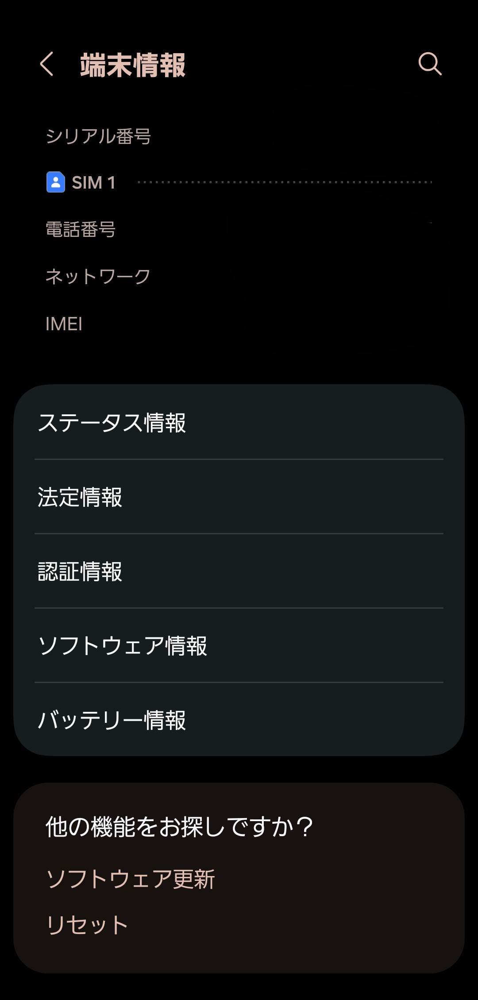
3. "ビルド番号" を7回タップし、パスワードを入力する
これにより、開発者オプションが有効になる。
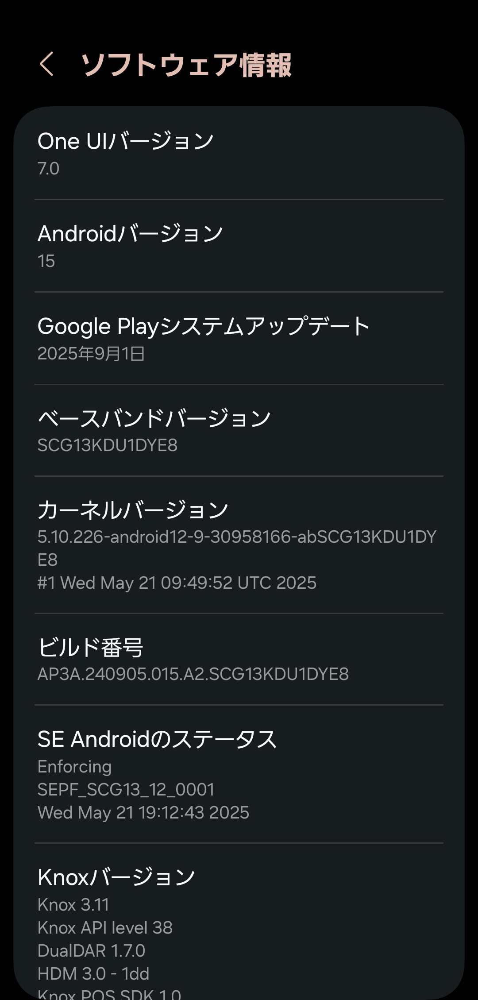
4. "OK" をタップする

adbで接続する

adbのワイヤレスデバッグを用いて、Galaxyからそのスマホ自体にadbコマンドが実行できるようにする。 adbコマンドをPCで実行する場合はGalaxyで設定アプリを開き、 "開発者オプション" の "USBデバッグ" をオンにして "USB デバッグを許可しますか?" に対して "OK" をタップし、PCとGalaxyをUSBケーブルで接続して "USB デバッグを許可しますか?" に対して "OK" をタップする。
方法
1.ADB Shellをインストールする
以下のリンクからADB Shellをインストールする
2.ADB Shellを開き、"はい" をタップする
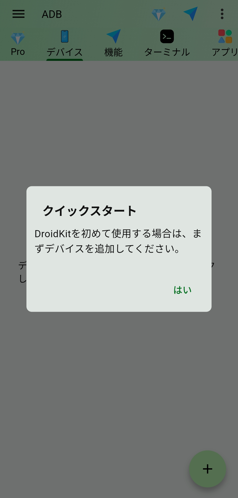
3. "接続方法を選択" で "Shizuku(Android 11+)" をタップする

4. "接続" をタップする
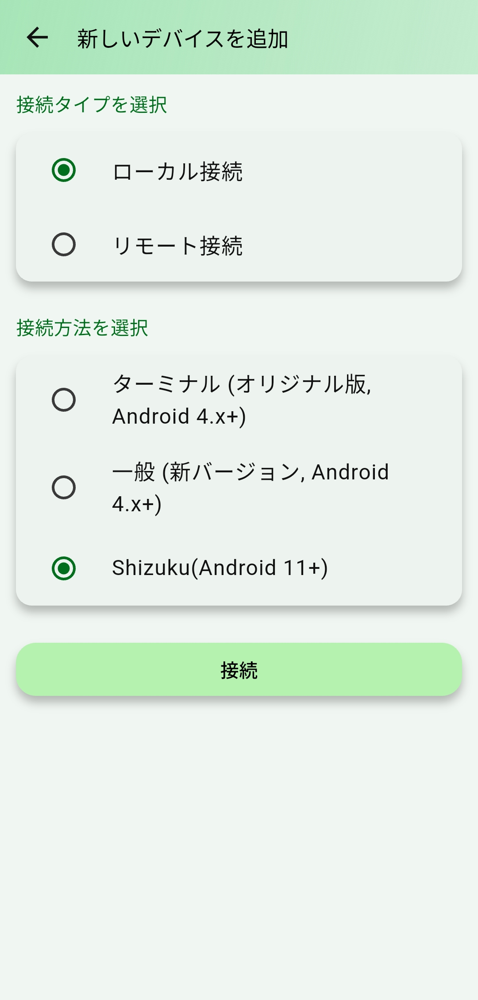
5. "はい" をタップする
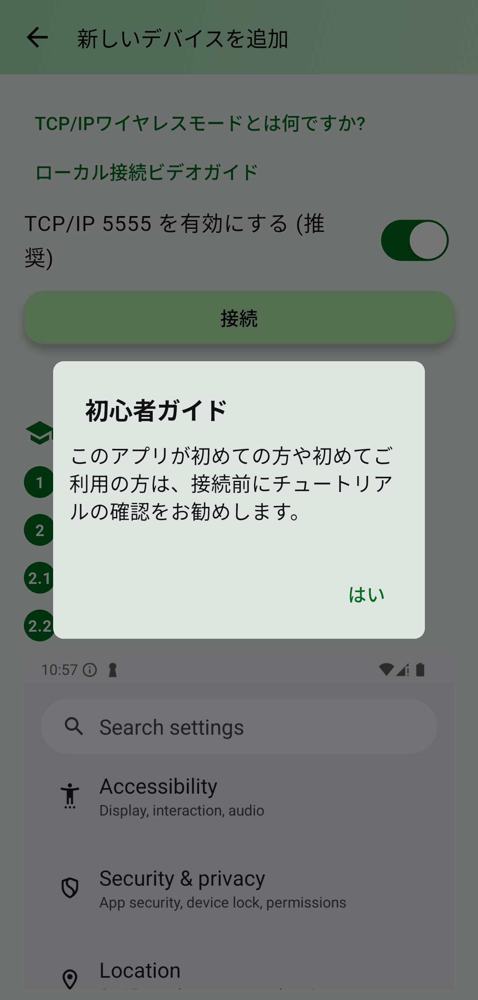
6. "接続" をタップする

7. "はい" をタップする

8. "許可" をタップする

9. "接続" をタップする

10. "はい" をタップする
ここで設定アプリの開発者向けオプションが開かれる。

11. "USBデバッグ" をオンにする

12. "OK" をタップする

13. "ワイヤレスデバッグ" をオンにする
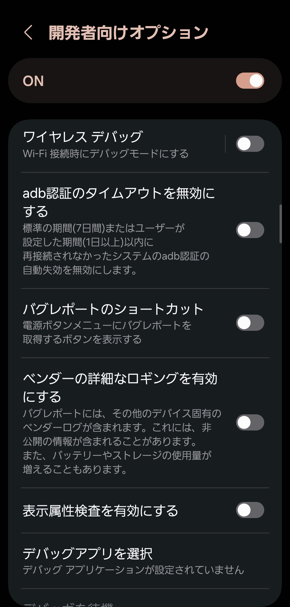
14. "許可" をタップする
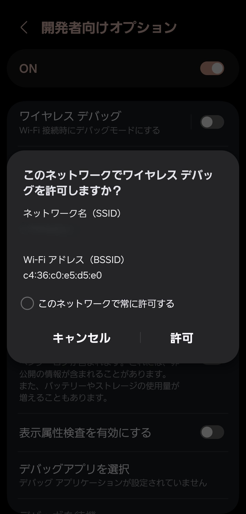
15. "ワイヤレスデバッグ" をタップする

16. "ペア設定コードによるデバイスのペア設定" をタップする
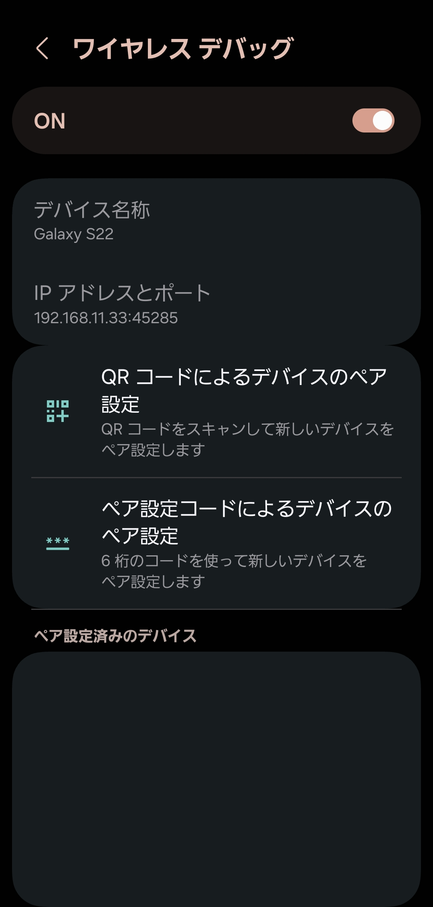
17.画面上に表示されたADB Shellの通知の "∨" をタップする

18.通知の "ペアリングコードを入力するにはクリックしてく..." をタップする

19.Wi-Fiペア設定コードを通知に入力して送信する
成功すると "ペアリング成功" と通知が来る。

20.ADB Shellを開き、 "はい" をタップする

21. "ターミナル" タブの "ローカルターミナル" をタップする
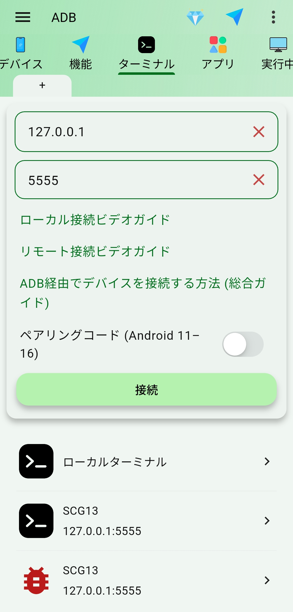
22. "はい" をタップする
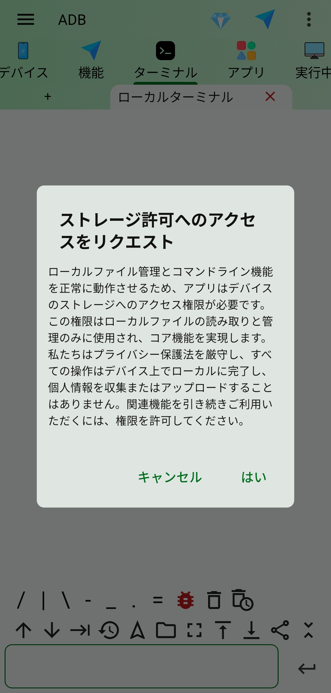
23.権限を許可する
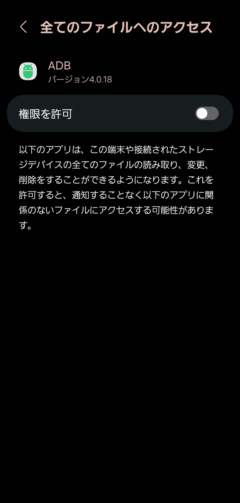
adbコマンドを実行する
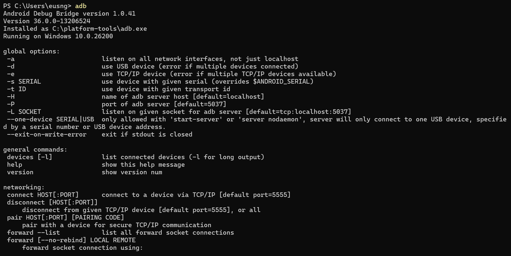
シャッター音の動作を海外仕様にするadbコマンドを実行し、システム音の音量を0にしてシャッター音を消す。 この手順はadbをGalaxyで実行する場合もPCで実行する場合も同様である。
方法
1.シャッター音の動作を海外仕様にするadbコマンドを実行する

以下のコマンドを実行する。 これにより、シャッター音の動作が海外仕様となる。 しかしシステムアップデート後はこの変更がリセットされ、さらに再起動後はペアリングもリセットされるため、ペアリングから同じ手順を実行する必要がある。
adb shell settings put system csc_pref_camera_forced_shuttersound_key 02.システム音の音量を0にする

シャッター音の音量はシステム音の音量と同期される。 充電時や画面ロックの解除、タッチ操作の際に鳴るシステム音の音量を0にすることでシャッター音が消える。 システム音の音量はマナーモードや "通知をミュート" をONにすることでも0になる。
デメリット
･アップデートごとにコマンドを実行する必要がある
アップデート後は適用した変更が元に戻されるため、アップデート毎にコマンドを実行する必要がある。
･システム音の音量を0にする必要がある
あまりいないと思うが、普段からシステム音を鳴らしている人はカメラ起動時のみシステム音の音量を0にするオートメーションを作成するなど、工夫する必要がある。
プロフィール

高度情報社会の最先端を駆け抜ける